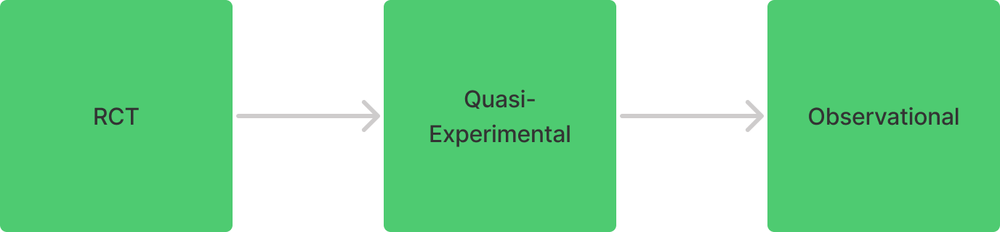

19 Designs
19.1 Misc
- Causal Hierarchy
- Preference of experiment in measuring causality where RCT is the most desirable
{kind=link}
19.2 Types
- RCT
- Cannot return valid causal estimates of the treatment effect at the participant level, but it can return a valid causal estimate of the average treatment effect (ATE), in the population
- Approaches for estimating the ATE
- Change-Score model (see Experiments, RCT >> Change Score Model)
- ANCOVA model (see ANOVA >> ANCOVA)
- Approaches for estimating the ATE
- Typical procedure
- recruit participants from the target population,
- measure the outcome variable during a pre-treatment assessment,
- randomly assign participants into
- a control condition or
- an experimental treatment condition,
- treat the participants in the treatment condition, and
- measure the outcome variable again at the conclusion of treatment.
- Reasons for not running a RCT
- It’s just not technically feasible to have individual-level randomization of users as we would in a classical A/B test
- e.g. randomizing which individuals see a billboard ad is not possible
- We can randomize but expect interference between users assigned to different experiences, either through word-of-mouth, mass media, or even our own ranking systems; in short, the stable unit treatment value assumption (SUTVA) would be violated, biasing the results
- It’s just not technically feasible to have individual-level randomization of users as we would in a classical A/B test
- Cannot return valid causal estimates of the treatment effect at the participant level, but it can return a valid causal estimate of the average treatment effect (ATE), in the population
- Quasi-Experiemental
- Due to the lack of a random assignment, the treatment and control groups are not equivalent before the intervention. So, any differences from these two groups could be caused by the pre-existing differences.
- Example
- Randomly choose some cities within which to show billboards and other cities to leave without.
- We can look for changes in the test regions at-specific-times as compared to the control regions at-specific-times.
- Since random changes happen all the time, we need to look historically to figure out what kinds of changes are normal so we can identify the impact of our test.
- Because groups of individuals are assigned based on location rather than assigning each individual at random, and without the individual randomization there is a much larger chance for imbalance due to skewness and heterogeneous differences.
- Types
- Difference-in-Differences, Regression Discontinuity Design, Synthetic Control Method, Interrupted Time Series
- Observational
- Types
- Matching, Propensity Score Matching, Propensity Score Stratification, Inverse Probability of Treatment Weighting, and Covariate Adjustment
- Types
19.3 Factorial Designs (aka Multifactorial Designs)
- Two or more independent variables that are qualitatively different
- Each has two or more levels
- Notation
- Described in terms of number of IVs and number of levels of each IV
- Example 2 X 2 X 3
- 3 IVs
- 2 with 2 levels and 1 with 3 levels
- Results in 12 conditions
- 3 IVs
- Flavors
- Between-subjects: different subjects participating in each cell of the matrix
- Within-subjects: the same subjects participating in each cell of the matrix
- Mixed: a combination where one (or more) factor(s) is manipulated between subjects and another factor(s) is manipulated within subjects
.png)
- Combined/Expericorr
.png)
- In this example both depressed and non-depressed categories are between-subjects & non-experimental
- I think experimental/non-experimental terminology is the same as manipulated/measured
- Believe the no
- An experimental design that includes one or more manipulated independent variables and one or more preexisting participant variables that are measured rather than manupulated
- Sometimes participant continuous variables are dicotomized to keep a strict factorial design but this may bias the results by missing effects that are actually present or obtaining effects that are statistical artifacts. (Should just use multivariable regression instead)
- Median-split procedure – participants who score below the median on the participant variable are classified as low, and participants scoring above the median are classified as high
- Extreme groups procedure – use only participants who score very high or low on the participant variable (such as lowest and highest 25%)
- Use cases
- Determine whether effects of the independent variable generalize only to participants with particular characteristics
- Examine how personal characteristics relate to behavior under different experimental conditions
- Reduce error variance by accounting for individual differences among participants
- In this example both depressed and non-depressed categories are between-subjects & non-experimental
19.4 Observational
- Matching and Propensity Score Matching
- Propensity Score Stratification
- Inverse Probability of Treatment Weighting
- Covariate Adjustment
19.5 Quasi-Experimental
- Typical Preconditions
- The treated group looks like the control group (similarity for comparability);
- A sufficiently large number of observations within each group (a large n)
- Randomizing at the lowest level possible Notes from: Key Challenges with Quasi Experiments at Netflix
- Description: RCTs require you to randomize similar units (e.g. individual people) into treatment and control groups. If this isn’t possible at the individual level, then randomizing at the lowest level possible is the closest, next best thing.
- Example
- Netflix: Measure the impact of TV or billboard advertising on member engagement. It is impossible to have identical treatment and control groups at the member level as we cannot hold back individuals from such forms of advertising. Randomize our member base at the smallest possible level. For instance, TV advertising can be bought at TV media market level only in most countries. This usually involves groups of cities in closer geographic proximity.
- Problems
- small sample sizes
- e.g. If randomizing by geographical units, there are probably not too many of these
- high variation and uneven distributions in treatment and control groups due to heterogeneity across units
- e.g. London with its high population is randomly assigned to the treatment cell, and people in London love sci-fi much more than other cities. London’s love for sci-fi would result in an overestimated effect.
- small sample sizes
- Solutions
- repeated randomizations (aka re-randomization)
- keep randomizing until we find a randomization that gives us the maximum desired level of balance on key variables across treatment cells
- Some problems still remain
- Can only simultaneously balance on a limited number of observed variables, and it is very difficult to find identical geographic units on all dimensions
- Can still face noisy results with large confidence intervals due to small sample size
- Implement designs involving multiple interventions in each treatment cell over an extended period of time whenever possible (i.e. instead of a typical experiment with single intervention period).
- This can help us gather enough evidence to run a well-powered experiment even with a very small sample size. Large amounts of data per treatment cell increases the power of the experiment.
- Use a Bayesian Dynamic Linear Model (DLM) to estimate the treatment effect
- uses a multivariate structure to analyze more than a single point-in-time intervention in a single region.
- dlm PKG (see bkmks)
- repeated randomizations (aka re-randomization)
19.6 Randomized Complete Block Design (RCBD)
- Notes from https://www.r-bloggers.com/2020/12/accounting-for-the-experimental-design-in-linear-nonlinear-regression-analyses/
- Also see
- Experiments, Analysis >> Examples for an analysis example of RCBD
- The defining feature is that each block sees each treatment exactly once
- Running a linear regression analysis without taking into account the correlation within blocks
- Any block-to-block variability goes into the residual error term, which is, therefore, inflated.
- Taking the mea
- Advantages
- Generally more precise than the completely randomized design (CRD).
- No restriction on the number of treatments or replicates.
- Some treatments may be replicated more times than others.
- Missing plots are easily estimated.
- Disadvantages
- Error degrees of freedom is smaller than that for the CRD (problem with a small number of treatments).
- Large variation between experimental units within a block may result in a large error term
- If there are missing data, a RCBD experiment may be less efficient than a CRD
- Steps
- Choose the number of blocks (minimum 2) – e.g. 4
- The number of blocks is the number of “replications”
- Choose treatments (assign numbers or letters for each) – e.g. 6 trt – A,B, C, D, E, F
- Treatments are assigned at random within blocks of adjacent subjects, each treatment once per block.
- Any treatment can be adjacent to any other treatment, but not to the same treatment within the block
- Randomize the treatments and blocks
Example
Obs block trt 1 2 B 2 2 C 3 2 A 4 2 D 5 2 E 6 2 F 7 1 B 8 1 C 9 1 E 10 1 A 11 1 F 12 1 D 13 3 D 14 3 A 15 3 C 16 3 F 17 3 B 18 3 E 19 4 A 20 4 F 21 4 B 22 4 C 23 4 D 24 4 E
- Choose the number of blocks (minimum 2) – e.g. 4
19.7 Conjoint Analysis
- Conjoint experiments are a special kind of randomized experiment where study participants are asked questions that have experimental manipulations. (wiki)
- The objective of conjoint analysis is to determine what combination of a limited number of attributes is most influential on respondent choice or decision making.
- Unlike a standard randomized experiment where one feature of interest is manipulated (like in an A/B test), conjoint experiments are choose-your-own-adventure randomized experiments.
- Participants are presented with 2+ possible options that have a variety of features with different levels in those features, and then they’re asked to choose one (for a binary outcome) or rate them on some sort of scale (for a continuous outcome).
- Misc
- Example: What effect do different political candidate characteristics have on the probability that a respondent would select that candidate (or on candidate favorability)?
Survey Question
Candidate 1 Candidate 2 Military service Did not serve Served Religion None Mormon College State university Ivy League university Profession Lawyer Business owner Gender Female Female Income $54,000 $92,000 Race/Ethnicity White Asian American Age 45 68 If you had to choose between them, which of these two candidates would you vote for?
- Candidate 1
- Candidate 2
Choice Attributes
Features/Attributes Levels Military service Served, Did not serve Religion None, Jewish, Catholic, Mainline protestant, Evangelical protestant, Mormon College No BA, Baptist college, Community college, State university, Small college, Ivy League university Profession Business owner, Lawyer, Doctor, High school teacher, Farmer, Car dealer Gender Male, Female Income $32,000; $54,000; $65,000; $92,000; $210,000; $5,100,000 Race/Ethnicity White, Native American, Black, Hispanic, Caucasian, Asian American Age 36, 45, 52, 60, 68, 75 - Each of the eight attributes had different levels within them that respondents could possibly see.
- 2 × 6 × 6 × 6 × 2 × 6 × 6 × 6, or 186,624 different attribute combinations that very likely won’t all be used in a one setting.